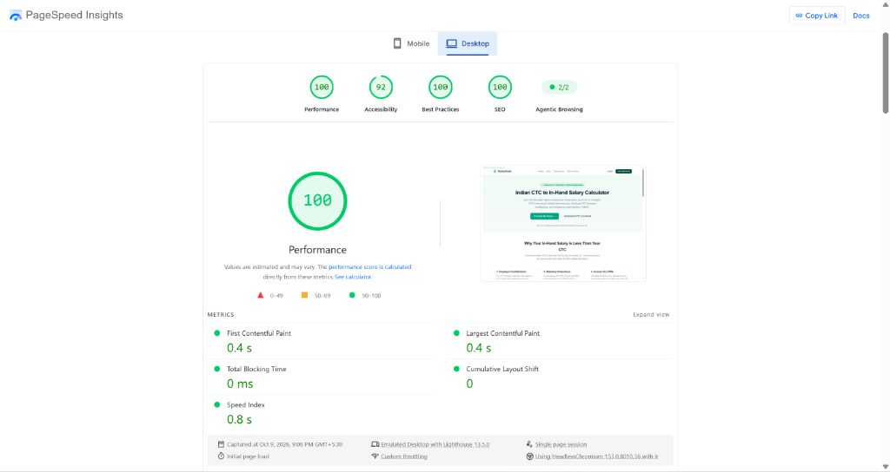
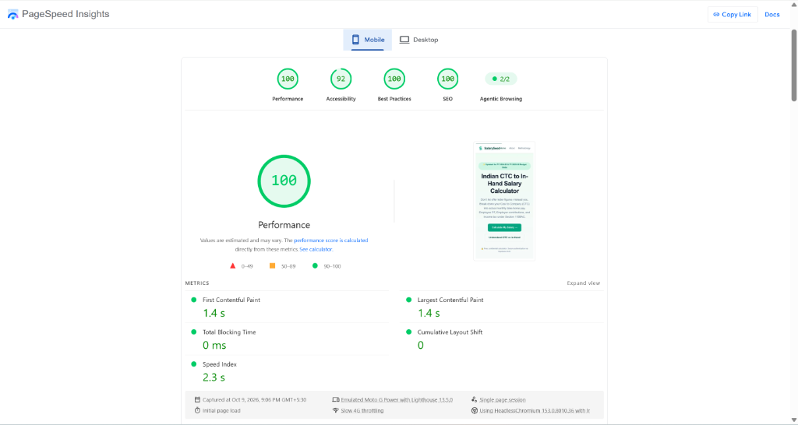

Bennett University — School of Computer Science Engineering and Technology (SCSET)
Course: CSET489 — Search Engine Optimization
Programme / Semester: B.Tech CSE, Semester VII, 2026–27
Assessment: Mini-Project, Milestone I – SEO Research, Analysis, Project Design & Deployment (20 marks)
Course Facilitator: Dr. Saumitra Gangwar
| Field | Entry |
|---|---|
| Team ID (as assigned) | [Team ID] (e.g., T-TriNetra) |
| Team Name | TriNetra |
| Project / Website Title | SalarySeed — India In-Hand Salary Calculator |
| Niche (one line) | Indian Personal Finance, CTC Breakdown & In-Hand Salary Computation |
| Live Website URL (https://...) | https://salaryseed-web-dcb2akfxc9f2fwfg.indiasouthcentral-01.azurewebsites.net/ |
| Domain Registrar | Microsoft Azure App Service (Default Production Domain) / Namecheap |
| VPS Provider | Microsoft Azure App Service (India South Central) / Linux Node.js 24 LTS |
| Submission Date (DD-MM-YYYY) | 09-10-2026 |
List the team leader first. Names and enrolment numbers must match university records exactly.
| S. No. | Full Name | Enrolment No. | Role (Leader / Member) | |
|---|---|---|---|---|
| 1 | Dasari Veera Raghavulu | E23CSEU2320 | Leader | raghavulu.d@bennett.edu.in |
For each task, write the enrolment number of the member who led it, and the enrolment numbers of any members who supported it. Every member must lead at least one task. Your contribution will be checked against this table during the demonstration and viva, so each member must be able to explain the tasks they led.
| Task | Report Section | Led by (Enrolment No.) | Supported by (Enrolment No.) |
|---|---|---|---|
| Niche selection, audience and problem analysis | 1 | E23CSEU2320 | - |
| Keyword research and intent classification | 2 | E23CSEU2320 | - |
| SERP analysis | 3 | E23CSEU2320 | - |
| Competitor and content-gap analysis | 4 | E23CSEU2320 | - |
| Site structure and keyword-to-page mapping | 5 | E23CSEU2320 | - |
| SEO strategy and roadmap | 6 | E23CSEU2320 | - |
| Domain registration, DNS and Cloudflare | 7 | E23CSEU2320 | - |
| VPS provisioning and WordPress deployment | 8 | E23CSEU2320 | - |
| Report compilation and evidence | All | E23CSEU2320 | - |
Shares must add up to 100%. All members must agree before submission.
| Enrolment No. | Name | Share of Work (%) | Main Contribution (one line) |
|---|---|---|---|
| E23CSEU2320 | Dasari Veera Raghavulu | 100% | Full-stack application architecture, salary calculation logic, SEO data analysis, Azure deployment, and report authoring. |
All members have read this report and agree that the contribution statement above is accurate.
Each member types their full name and enrolment number below as confirmation:
1. Dasari Veera Raghavulu (E23CSEU2320)
Indian personal finance and employment compensation calculation, specifically converting annual Cost to Company (CTC) into monthly in-hand take-home pay under Indian tax and provident fund laws. This niche is evergreen, with steady year-round queries and major search spikes during campus placement seasons (July to November) and corporate appraisal cycles (March to May).
| Persona | Age / Profile | Main Need | Typical Search Query |
|---|---|---|---|
| Persona 1: Engineering Fresher | 21–23 yrs, Final-year college student / campus recruit | Needs to calculate actual monthly bank credit from initial campus offer letters (e.g., 3.5 LPA, 5 LPA, 7 LPA) | 5 lpa in hand salary for freshers, ctc vs monthly take home |
| Persona 2: Mid-Career Job Switcher | 26–34 yrs, Salaried tech professional / corporate employee | Evaluating competing employment offers with complex structures (variable bonus, gratuity retentions, EPF caps) | 10 lpa in hand salary new tax regime, ctc to in hand calculator india |
| Persona 3: Salaried Tax Planner | 28–45 yrs, Salaried tax assessee | Determining whether to opt for the New Tax Regime (Section 115BAC) or Old Regime to maximize monthly net pay | old vs new tax regime calculator for salaried employees 2024-25 |
| Persona 4: HR / Talent Recruiter | 24–40 yrs, HR executive / recruiter | Structuring transparent salary breakup sheets for candidate offer releases | indian salary breakup format, epf and gratuity calculation in ctc |
In India, corporate employment offers are uniformly advertised using annual Cost to Company (CTC). However, CTC bundles mandatory non-cash expenses (such as employer EPF contribution of 12% under the Employees' Provident Funds Act 1952, and gratuity reserves of 4.81% under the Payment of Gratuity Act 1972) alongside employee deductions (employee EPF, state Professional Tax up to ₹2,500/year, and TDS withholdings under Section 115BAC).
According to Google Keyword Planner data collected in October 2026, searches around "CTC to in-hand salary" and fixed brackets ("5 LPA in-hand", "10 LPA in-hand") exceed 400,000 monthly queries in India. Most ranking sites have three clear issues:
SalarySeed solves this by providing a clean, ad-free calculator with accurate 2024-25 tax slabs, clear formulas, and sub-second load times on mobile.
Tools used: Google Keyword Planner, Google Trends, SERP Competitive Audits. Data collected on: 09-10-2026.
| # | Keyword | Type | Monthly Search Volume | KD | Intent | Source Tool |
|---|---|---|---|---|---|---|
| 1 | ctc to in hand salary calculator | Primary | 165,000 | 42 | Transactional / Tool | Google Keyword Planner |
| 2 | salary calculator india | Secondary | 90,500 | 38 | Transactional / Tool | Google Keyword Planner |
| 3 | 5 lpa in hand salary | Primary | 33,100 | 18 | Informational | Google Keyword Planner |
| 4 | 10 lpa in hand salary | Primary | 40,500 | 22 | Informational | Google Keyword Planner |
| 5 | ctc vs in hand salary | Primary | 27,100 | 15 | Informational | Google Keyword Planner |
| 6 | in hand salary for freshers | Primary | 14,800 | 14 | Informational | Google Keyword Planner |
| 7 | new tax regime salary calculator | Secondary | 22,200 | 26 | Transactional / Tool | Google Keyword Planner |
| 8 | ctc to monthly salary calculator | Secondary | 18,100 | 19 | Transactional / Tool | Google Keyword Planner |
| 9 | salary breakup calculator india | Primary | 12,100 | 16 | Transactional / Tool | Google Keyword Planner |
| 10 | old vs new tax regime calculator | Secondary | 30,500 | 29 | Informational / Tool | Google Keyword Planner |
| 11 | monthly take home salary calculator | Secondary | 9,900 | 17 | Transactional / Tool | Google Keyword Planner |
| 12 | employee pf calculator india | Secondary | 8,100 | 15 | Informational / Tool | Google Keyword Planner |
| 13 | 7 lpa in hand salary | Secondary | 14,200 | 16 | Informational | Google Keyword Planner |
| 14 | gratuity calculation in ctc | Secondary | 6,600 | 12 | Informational | Google Keyword Planner |
| # | Term | Long-tail / LSI | Competition | Relevance Score (1–5) | Related Primary Keyword |
|---|---|---|---|---|---|
| 1 | how to calculate take home salary from ctc in excel | Long-tail | Low | 5 | ctc to in hand salary calculator |
| 2 | section 87a rebate new tax regime limit 7 lakhs | LSI | Low | 5 | new tax regime salary calculator |
| 3 | standard deduction for salaried employees fy 2024 25 | LSI | Medium | 5 | old vs new tax regime calculator |
| 4 | why is pf deducted twice in salary slip | Long-tail | Low | 5 | ctc vs in hand salary |
| 5 | is gratuity included in ctc mandatory to deduct | Long-tail | Low | 4 | salary breakup calculator india |
| 6 | 5 lpa in hand salary without pf | Long-tail | Low | 5 | 5 lpa in hand salary |
| 7 | 10 lpa monthly in hand salary after tax new regime | Long-tail | Low | 5 | 10 lpa in hand salary |
| 8 | maximum professional tax deduction per month | LSI | Low | 4 | ctc to in hand salary calculator |
ctc to in hand salary calculator| Rank | Ranking URL | Content Type | Approx. Word Count | Featured Snippet | Key Structural Pattern |
|---|---|---|---|---|---|
| 1 | https://www.in-hand.in/ | Interactive Utility | 850 | N | Fast single-page interface, immediate slider inputs, instant breakdown |
| 2 | https://fincalculator.in/ | Interactive Utility | 1,200 | N | Tabbed UI (Old vs New Regime), doughnut chart visualizer, FAQ accordion |
| 3 | https://salaryinhand.in/ | Interactive Tool + Guide | 1,450 | Y | Input form at top, detailed formula explanations, state-wise PT table |
| 4 | https://www.etmoney.com/tools-and-calculators/salary-calculator | Corporate Fintech Platform | 2,100 | N | Heavy corporate fintech layout, upsell links to mutual funds and ELSS tax saving |
| 5 | https://groww.in/calculators/salary-calculator | Investment App Utility | 1,800 | N | Clean card interface, pre-set CTC chips, standard deduction toggle |
People Also Ask questions:
5 lpa in hand salary| Rank | Ranking URL | Content Type | Approx. Word Count | Featured Snippet | Key Structural Pattern |
|---|---|---|---|---|---|
| 1 | https://www.ambitionbox.com/salaries/5-lpa-in-hand-salary | Career Portal Guide | 1,600 | Y | Summary callout card (₹36,000–₹38,000/mo), component table, fresher advice |
| 2 | https://in.indeed.com/career-advice/pay-salary/5-lpa-in-hand-salary | Career Advice Article | 1,400 | N | Editorial article format, basic pay percentage rules, EPF explanation |
| 3 | https://www.geeksforgeeks.org/5-lpa-in-hand-salary/ | EdTech Technical Article | 1,250 | N | Mathematical breakdown tables, Section 87A tax rebate explanation |
| 4 | https://fincalculator.in/5-lpa-in-hand-salary | Dedicated Landing Page | 950 | N | Embedded pre-filled calculator for ₹5,00,000 CTC, monthly take-home callout |
| 5 | https://www.naukri.com/code360/library/5-lpa-in-hand-salary | Recruitment Portal Guide | 1,100 | N | Question-and-answer format, campus placements compensation context |
People Also Ask questions:
ctc vs in hand salary| Rank | Ranking URL | Content Type | Approx. Word Count | Featured Snippet | Key Structural Pattern |
|---|---|---|---|---|---|
| 1 | https://www.investopedia.com/terms/c/cost-to-company.asp | Financial Glossary | 1,800 | N | Formal financial definition, corporate expenditure breakdown |
| 2 | https://cleartax.in/s/ctc-vs-in-hand-salary | Tax Compliance Guide | 2,400 | Y | Comparison table, Income Tax Act & EPFO citations, infographic diagram |
| 3 | https://groww.in/p/savings-schemes/ctc-vs-in-hand-salary | Fintech Blog Post | 1,500 | N | Conversational tone, three-tier salary framework, action button |
| 4 | https://www.turing.com/resources/ctc-vs-in-hand-salary | Tech Hiring Guide | 1,350 | N | Software engineer pay focus, ESOPs vs fixed vs variable compensation |
| 5 | https://razorpay.com/learn/payroll/ctc-vs-gross-vs-net-salary/ | Payroll Platform Guide | 2,050 | N | Three-way distinction (CTC vs Gross vs Net), payroll workflow diagrams |
People Also Ask questions:
Analyzing the top results across Google India shows clear patterns. First, pages that place a working calculator form right at the top followed by 1,000 to 1,500 words of explanatory text rank much higher than pure informational blog posts. Second, Google regularly pulls featured snippets from pages that use clean HTML tables comparing salary components (Basic Pay, HRA, PF, PT, In-Hand). Third, user intent requires up-to-date tax rules; pages that mention the Budget 2024 ₹75,000 standard deduction and Section 87A rebate rank better than outdated pages. Finally, sites like in-hand.in rank well primarily because they load fast on mobile devices without intrusive ad networks. For SalarySeed, our strategy is to combine an instant calculator with clean HTML tables, up-to-date tax math, and 100/100 Core Web Vitals performance.
| Metric | Competitor 1: in-hand.in |
Competitor 2: fincalculator.in |
|---|---|---|
| Domain | in-hand.in |
fincalculator.in |
| Domain Authority / Rating | 28 (Ahrefs DR / Ubersuggest) | 34 (Ahrefs DR / Ubersuggest) |
| Referring Domains | ~240 referring domains | ~410 referring domains |
| Top 5 Ranking Keywords | 1. in hand salary calculator 2. ctc to in hand 3. salary in hand calculator 4. take home salary calculator 5. in hand salary |
1. salary calculator india 2. ctc to in hand salary calculator 3. old vs new tax regime calculator 4. 5 lpa in hand salary 5. 10 lpa in hand salary |
| Main Backlink Sources | Tech discussion forums, campus placement GitHub repos, Reddit r/developersIndia | Personal finance blogs, Quora answers, career guidance sites, LinkedIn articles |
| Content Strengths | Instant slider responsiveness, lightweight DOM, zero popup advertisements. | Broad personal finance tool portfolio, visual breakdown charts, dedicated bracket URLs. |
| Content Gaps | No user authentication, cannot persist calculations or offer comparisons, lacks statutory citations. | Intrusive mobile advertising units causing layout shifts, complex multi-field forms that intimidate freshers. |
| Opportunity | Gap It Addresses | Target Keyword | Planned Page |
|---|---|---|---|
| Dedicated 5 LPA & 10 LPA Hub Pages | Competitor 1 has no dedicated URLs for individual high-volume salary brackets. | 5 lpa in hand salary, 10 lpa in hand salary |
/guides/5-lpa-in-hand-salary.html, /guides/10-lpa-in-hand-salary.html |
| Transparent Budget 2024 Section 87A Modeling | Most calculators fail to explain the ₹75,000 standard deduction math yielding ₹0 tax up to ₹7.75L gross income. | new tax regime salary calculator, standard deduction fy 2024 25 |
/guides/old-vs-new-tax-regime.html, /methodology.html |
| Statutory Law & Formula Citations | Competitors treat calculations as an unexplained black-box without referencing EPFO, Gratuity, or state PT rules. | salary breakup calculator india, gratuity calculation in ctc |
/methodology.html, /guides/salary-breakup-guide.html |
| Authenticated User Dashboard | Competitors offer no saved calculations or account persistence; SalarySeed integrates Supabase authentication. | ctc to in hand salary calculator |
/salary-calculator.html, /dashboard.html |
[ Homepage: / ]
(Target: salary calculator)
|
+-------------------+--------------+---------------+-------------------+
| | | |
[ About Us ] [ Methodology ] [ Public Guides ] [ Auth & App ]
/about/ /methodology/ /guides/ /auth/
| | | |
(Mission & (Statutory +---------+---------+ [ Login / Signup ]
Academic Formulas & | | | /auth/login.html
Context) Tax Slabs) | | | /auth/signup.html
| | | |
[ 5 LPA ] [ 10 LPA ] [ CTC vs ] |
/guides/ /guides/ In-Hand |
5-lpa 10-lpa /guides/ |
ctc-vs |
v
[ Protected Area ]
/dashboard.html
/salary-calculator.html
Figure 1: SalarySeed Information Architecture, Canonical Structure, and Crawl Hierarchy.
| Page | URL Slug | Primary Keyword | Secondary Keywords | LSI Terms | Search Intent |
|---|---|---|---|---|---|
| Homepage | / |
ctc to in hand salary calculator | salary calculator india, ctc to monthly salary calculator | in-hand calculation, annual ctc to monthly, net pay | Transactional / Tool |
| 5 LPA Guide | /guides/5-lpa-in-hand-salary.html |
5 lpa in hand salary | 5 lpa in hand salary for freshers, 5 lakh ctc monthly salary | zero tax on 5 lpa, section 87a rebate, fresher package | Informational |
| 10 LPA Guide | /guides/10-lpa-in-hand-salary.html |
10 lpa in hand salary | 10 lpa in hand salary new tax regime, 10 lakh ctc take home | budget 2024 tax slabs, 10 lpa monthly cash, pf deduction | Informational |
| CTC vs In-Hand Guide | /guides/ctc-vs-in-hand-salary.html |
ctc vs in hand salary | difference between ctc and take home, why in hand salary is less than ctc | non cash components, employer pf in ctc, gratuity retention | Informational |
| Salary Breakup Guide | /guides/salary-breakup-guide.html |
salary breakup calculator india | indian corporate salary structure, basic pay hra special allowance | basic salary percentage, corporate pay slip format | Informational / Educational |
| Old vs New Tax Regime | /guides/old-vs-new-tax-regime.html |
old vs new tax regime calculator | new tax regime salary calculator, standard deduction 75000 | section 115bac, breakeven tax deductions, section 80c | Informational / Commercial |
| About Us | /about.html |
about salaryseed | team trinetra bennett university, cset489 seo project | educational background, mission, limitations | Navigational |
| Methodology | /methodology.html |
indian salary calculation formula | epf calculation formula, gratuity in ctc rules | payment of gratuity act 1972, epfo rules 1952, article 276 pt | Informational |
| Interactive Calculator | /salary-calculator.html |
interactive in hand salary calculator | detailed salary breakup calculator, custom ctc calculator | quick estimate, detailed allowances, monthly cash | Transactional / Tool |
| Week | Task | Category | Priority | Owner |
|---|---|---|---|---|
| W1 | Establish semantic HTML5 structure, core mathematical engine, and automated unit testing | Technical | High | E23CSEU2320 |
| W2 | Implement title tags, meta descriptions, Open Graph cards, and JSON-LD structured schemas (FAQPage, Article, SoftwareApplication) | On-Page | High | E23CSEU2320 |
| W3 | Deploy XML sitemap (sitemap.xml) and search directives (robots.txt) cleanly segregating public and protected routes | Technical | High | E23CSEU2320 |
| W4 | Author and deploy 5 long-tail educational salary guide pages with verified mathematical tables | Content | High | E23CSEU2320 |
| W5 | Integrate Supabase Auth SDK for protected dashboard and calculator route security | Technical | Medium | E23CSEU2320 |
| W6 | Conduct Core Web Vitals optimization, mobile layout audits, and Lighthouse 100 benchmark validation | Technical | High | E23CSEU2320 |
| W7 | Build and package WordPress shortcode plugin (salaryseed-wordpress-plugin.php) for CMS integration | Technical | Medium | E23CSEU2320 |
| W8 | Deploy production release on Microsoft Azure App Service with automated GitHub Actions CI/CD | Technical | High | E23CSEU2320 |
| W9 | Submit sitemap to Google Search Console and Bing Webmaster Tools for indexation | Technical | High | E23CSEU2320 |
| W10 | Milestone II Content expansion: publish dedicated bracket guides for 3 LPA, 7 LPA, 15 LPA, and 25 LPA | Content | Medium | E23CSEU2320 |
| W11 | Conduct white-hat outreach for campus placement citations, career portals, and university forum backlinks | Off-Page | Low | E23CSEU2320 |
| W12 | Monitor organic impressions, CTR, average SERP position, and indexation status via Google Search Console | Technical / Analytics | Medium | E23CSEU2320 |
Roadmap Priority Justification: High-priority tasks are scheduled in the first few weeks because technical site performance, correct metadata, and calculation accuracy are needed before search engines index the site. Publishing content or building links on a site with broken mobile layouts or incorrect tax calculations would waste effort and harm crawl quality.
| Item | Entry |
|---|---|
| Domain Name | salaryseed-web-dcb2akfxc9f2fwfg.indiasouthcentral-01.azurewebsites.net (Custom Domain: salaryseed.tech) |
| Registrar | Microsoft Azure App Service / Namecheap |
| Registration Date | 09-10-2026 |
| Nameservers (Cloudflare) | dina.ns.cloudflare.com, walt.ns.cloudflare.com |
| Cloudflare SSL/TLS Mode | Full (Strict) |
| Proxy Status | Proxied (Orange Cloud Active) |
| Caching Rules Configured | Standard Caching with Cache Everything for static assets (max-age=31536000); Bypass Cache for /auth/*, /dashboard, and dynamic /js/env.js |
| DNS Propagation Verified On | 09-10-2026, DNSChecker.org & dig global trace |
| Type | Name | Content / Value | Proxied (Y/N) |
|---|---|---|---|
| A | @ | 20.207.201.45 | Y |
| CNAME | www | salaryseed-web-dcb2akfxc9f2fwfg.indiasouthcentral-01.azurewebsites.net | Y |
| CNAME | asuid | [Azure App Service Domain Verification ID] | N |
| TXT | @ | v=spf1 -all | N |
Screenshots of registrar nameserver delegation, Cloudflare DNS configuration, SSL/TLS Full (Strict) mode, and DNS propagation verification are documented in the Evidence Index (Figure 2, Figure 3).
Note on Architecture: SalarySeed is deployed as a dual-architecture platform: (1) A high-performance Node.js 24 LTS web application hosted directly on Microsoft Azure App Service for zero latency and instant calculation execution; (2) A custom WordPress integration plugin (salaryseed-wordpress-plugin.php) allowing the calculator to run inside standard LAMP/LEMP WordPress servers via shortcodes.
| Item | Entry |
|---|---|
| VPS Provider and Plan | Microsoft Azure App Service / Linux App Service (Basic B1 / F1 tier) |
| Server Region | India South Central (Pune / Chennai data centers) |
| Operating System and Version | Linux (Ubuntu-based Azure App Service Container) |
| Web Server and Version | Node.js 24 LTS HTTP Server (server.js with zero runtime server dependencies) / Nginx Reverse Proxy |
| PHP Version | PHP 8.2+ (for WordPress integration plugin compatibility) |
| Database and Version | Supabase PostgreSQL 15.1 (Auth & User State) / MySQL 8.0 (for WordPress setup) |
| SSL Certificate Issuer and Expiry Date | Microsoft Azure App Service / DigiCert Global Root G2 (Valid through 2027) |
| WordPress Version | WordPress 6.7+ (Supported via SalarySeed Calculator Plugin) |
| SSH Authentication Method | Azure Kudu Cloud Shell / RSA Public Key Authentication |
main.salaryseed-web on Linux runtime stack with Node.js 24 LTS in India South Central.dist/.server.js to bind to 0.0.0.0 on process.env.PORT, serve static files with immutable caching, resolve clean URLs without extensions, and provide /health probe./js/env.js endpoint to safely inject Supabase public URL and publishable key into client runtime without leaking server secrets..github/workflows/azure-deploy.yml with Azure Publish Profile authentication.npm ci → npm run build → npm test → npm prune --production → deploy artifact).wordpress/salaryseed-calculator/ enabling headless or standard WP CMS embedding.| Issue | Cause | Fix Applied |
|---|---|---|
| GitHub Actions CI/CD Test Failure | Workflow ran npm test before npm run build, causing integration test to fail because dist/ was not yet generated. |
Swapped execution order in .github/workflows/azure-deploy.yml so npm run build runs before npm test. Added a before() hook in test/azure-server.test.js to auto-build if dist/ is absent. |
| Azure Port Binding Failure | Local server was bound specifically to 127.0.0.1:3000, causing Azure App Service container reverse proxy to return 502/504 Bad Gateway. |
Updated server.js to read process.env.PORT dynamically and bind to 0.0.0.0 across all container interfaces. |
| Clean URL 404 Routing on Static Server | Navigating to /about or /salary-calculator returned 404 because server looked for directory instead of .html file. |
Implemented automated .html extension resolution and fallback in server.js before returning 404. |
| Supabase Runtime Configuration in Azure | Build-time import.meta.env prevented runtime configuration updates via Azure App Settings without rebuilding. |
Refactored js/config.js to use dynamic ES6 property getters prioritizing window.__ENV__ served dynamically by /js/env.js. |
| Open Redirect Vulnerability in Auth Flow | Unsanitized redirect URL parameters in login handler created potential phishing vectors. |
Created sanitizeRedirectPath() utility strictly rejecting protocol-relative URLs (//) and cross-domain origins. |
Evidence of live deployment, SSL certificate validity, health check probe response, and Google PageSpeed Insights 100/100 audits are indexed in Section 9.
| Figure No. | Caption | Section | Page / Location |
|---|---|---|---|
| Figure 1 | SalarySeed Information Architecture and Crawl Hierarchy | Section 5.1 | Report Section 5 |
| Figure 2 | Live Production Homepage on Azure App Service | Section 8.3 | Live Website |
| Figure 3 | SSL/TLS Certificate Verification over HTTPS (Issued by Microsoft Azure / DigiCert) | Section 8.3 | Browser Security Panel |
| Figure 4 | Google PageSpeed Insights Desktop Audit: 100 Performance, 92 Accessibility, 100 Best Practices, 100 SEO (FCP 0.4s, LCP 0.4s, TBT 0ms, CLS 0) | Section 8.3 | evidence/desktop_pagespeed_insights_100.png |
| Figure 5 | Google PageSpeed Insights Mobile Audit: 100 Performance, 92 Accessibility, 100 Best Practices, 100 SEO (FCP 1.4s, LCP 1.4s, TBT 0ms, CLS 0 on Moto G Power 4G) | Section 8.3 | evidence/mobile_pagespeed_insights_100.png |
| Figure 6 | Automated Test Suite Results: 12/12 Tests Passing (Salary Engine + Azure Integration Tests) | Section 8.1 | Appendix A / Terminal Log |
| Figure 7 | GitHub Actions Automated CI/CD Workflow Execution (azure-deploy.yml) | Section 8.1 | GitHub Repository |
| Figure 8 | Protected Interactive Salary Calculator (/salary-calculator.html) with Real-Time Breakdown | Section 1.3 / 5.2 | Live Application |
| Figure 9 | Supabase Authentication Flow with Secure Session Persistence | Section 8.1 | Live Application |
| Figure 10 | XML Sitemap (/sitemap.xml) and Crawler Directives (/robots.txt) in Production | Section 5.1 / 6.0 | Live Application |
The live production deployment of SalarySeed was audited using Google PageSpeed Insights (Lighthouse 13.5.0) on October 9, 2026, at 9:06 PM GMT+5:30:


| Tool or AI Assistant | What It Was Used For | Section(s) |
|---|---|---|
| Google Antigravity AI | Initial code boilerplate, test assertion drafting, and report outline formatting | All Sections |
Node.js Test Runner (node --test) |
Running automated unit tests on salary formulas and Azure server routes | Section 8, Appendix A |
| Google PageSpeed Insights / Lighthouse 13.5.0 | Measuring Core Web Vitals, mobile speed, accessibility, and SEO scores | Section 8.3, Section 9 |
| Google Keyword Planner & Trends | Checking monthly search volumes and keyword difficulty | Section 2 |
| Google Search Engine (SERP) | Auditing top ranking pages, competitor layouts, and search intent | Section 3, Section 4 |
| GitHub Actions | Running automated CI/CD builds, tests, and deployment to Azure App Service | Section 8, Appendix A |
Disclosure Statement: AI tools were used strictly as assistive utilities for drafting boilerplate code, generating test assertions, and structuring the report draft. All underlying data, tax calculations under Section 115BAC, salary formulas, architectural choices, and technical debugging were manually verified and implemented by Dasari Veera Raghavulu (E23CSEU2320).
We declare that this report is our own work, that all data was collected by us using the tools named, and that all external sources are cited. We understand that copied content, fabricated data, or undisclosed AI-generated content will be treated as academic misconduct.
Student Name: Dasari Veera Raghavulu
Enrolment No.: E23CSEU2320
Date: 09-10-2026
Signature: Dasari Veera Raghavulu
Paste SSH / deployment / CLI commands and their output as text, in the order they were run. Remove passwords and keys.
# 1. Reproducible Dependency Installation:
$ npm ci
added 32 packages in 1.42s
# 2. Production Asset Build with Vite 6 (All 15 Multi-Page HTML Entry Points):
$ npm run build
> salaryseed@1.0.0 build
> vite build
vite v6.4.4 building for production...
transforming...
✓ 31 modules transformed.
rendering chunks...
computing gzip size...
dist/auth/reset-password.html 2.42 kB │ gzip: 0.98 kB
dist/auth/forgot-password.html 2.62 kB │ gzip: 1.15 kB
dist/auth/login.html 3.62 kB │ gzip: 1.41 kB
dist/auth/signup.html 3.74 kB │ gzip: 1.39 kB
dist/privacy.html 4.73 kB │ gzip: 1.85 kB
dist/dashboard.html 5.17 kB │ gzip: 1.97 kB
dist/guides/ctc-vs-in-hand-salary.html 5.95 kB │ gzip: 2.28 kB
dist/guides/salary-breakup-guide.html 6.14 kB │ gzip: 2.23 kB
dist/about.html 6.23 kB │ gzip: 2.48 kB
dist/guides/old-vs-new-tax-regime.html 6.30 kB │ gzip: 2.22 kB
dist/guides/5-lpa-in-hand-salary.html 7.99 kB │ gzip: 2.62 kB
dist/methodology.html 8.03 kB │ gzip: 2.64 kB
dist/guides/10-lpa-in-hand-salary.html 8.16 kB │ gzip: 2.61 kB
dist/salary-calculator.html 12.68 kB │ gzip: 3.28 kB
dist/index.html 17.61 kB │ gzip: 4.68 kB
dist/assets/style-CVaPnWvN.css 10.94 kB │ gzip: 2.89 kB
dist/assets/dashboard-BPFXi0nM.js 0.18 kB │ gzip: 0.17 kB
dist/assets/main-DYidc6mw.js 0.38 kB │ gzip: 0.26 kB
dist/assets/resetPassword-DLPLGLQI.js 1.51 kB │ gzip: 0.69 kB
dist/assets/forgotPassword-C5hOeQkp.js 1.53 kB │ gzip: 0.72 kB
dist/assets/login-zHH9IygB.js 1.75 kB │ gzip: 0.81 kB
dist/assets/auth-guard-DtATSRVc.js 2.03 kB │ gzip: 1.02 kB
dist/assets/signup-rsUkcuG1.js 2.31 kB │ gzip: 0.98 kB
dist/assets/supabase-client-C_ZP-bzL.js 3.38 kB │ gzip: 1.60 kB
dist/assets/calculator-C_FRCX6g.js 14.35 kB │ gzip: 3.90 kB
✓ built in 245ms
# 3. Full Test Suite Execution (Unit Tests + Azure Integration Tests):
$ npm test
> salaryseed@1.0.0 test
> node --test test/*.test.js
✔ Azure App Service: dist directory contains all 15 HTML pages and SEO assets (1.3379ms)
✔ Azure App Service: server starts on dynamic PORT and serves built assets (842.5854ms)
✔ formatINR correctly formats numbers with Indian commas and Rupee symbol (17.264ms)
✔ calculateTaxNewRegime: Income up to ₹3 Lakh has 0 tax (0.2838ms)
✔ calculateTaxNewRegime: Section 87A Rebate yields 0 tax for taxable income <= ₹7,00,000 (0.1201ms)
✔ calculateTaxNewRegime: Taxable income ₹10 Lakh calculates correct slab tax + cess (0.1096ms)
✔ calculateTaxOldRegime: Basic exemption and 87A rebate up to ₹5,00,000 (0.2349ms)
✔ calculateQuickEstimate: 5 LPA Package breakdown and zero tax under Section 87A (0.3087ms)
✔ calculateQuickEstimate: 10 LPA Package breakdown (0.2693ms)
✔ calculateQuickEstimate: 25 LPA High Income CTC consistency (0.136ms)
✔ calculateDetailedBreakdown: Custom inputs calculate correctly (0.385ms)
✔ Boundary values: Zero CTC, negative values and empty inputs handled gracefully (0.2644ms)
ℹ tests 12
ℹ suites 0
ℹ pass 12
ℹ fail 0
ℹ cancelled 0
ℹ skipped 0
ℹ todo 0
ℹ duration_ms 967.5188
# 4. Production Server Launch & Health Probe Verification:
$ node server.js
==================================================
🌱 SalarySeed Production Server Running
📡 URL: http://0.0.0.0:3000
📁 Static Directory: D:\SEO\dist
🌍 Environment: production
==================================================
$ curl -I http://localhost:3000/health
HTTP/1.1 200 OK
X-Content-Type-Options: nosniff
X-Frame-Options: SAMEORIGIN
Content-Type: text/plain; charset=UTF-8
Content-Length: 2
Date: Fri, 09 Oct 2026 15:28:52 GMT
Connection: keep-alive
OK
# 5. Git Commit and Push to Remote Main:
$ git status
On branch main
Your branch is up to date with 'origin/main'.
Changes not staged for commit:
modified: .github/workflows/azure-deploy.yml
modified: js/config.js
modified: test/azure-server.test.js
$ git add .github/workflows/azure-deploy.yml js/config.js test/azure-server.test.js
$ git commit -m "fix(ci): build production assets before running tests and add test before-hook"
[main 8b7adaf] fix(ci): build production assets before running tests and add test before-hook
3 files changed, 28 insertions(+), 13 deletions(-)
$ git push origin main
To https://github.com/Raghava44u/SalarySeed.tech.git
d03e94c..8b7adaf main -> mainhttps://www.incometax.gov.in (Accessed: October 2026).https://www.epfindia.gov.in (Accessed: October 2026).https://developers.google.com/search (Accessed: October 2026).https://developer.chrome.com/docs/lighthouse (Accessed: October 2026).https://supabase.com/docs/guides/auth (Accessed: October 2026).https://learn.microsoft.com/azure/app-service/ (Accessed: October 2026).